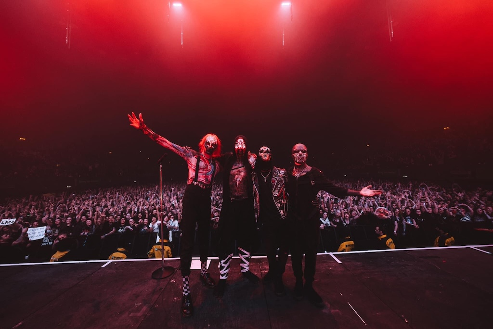
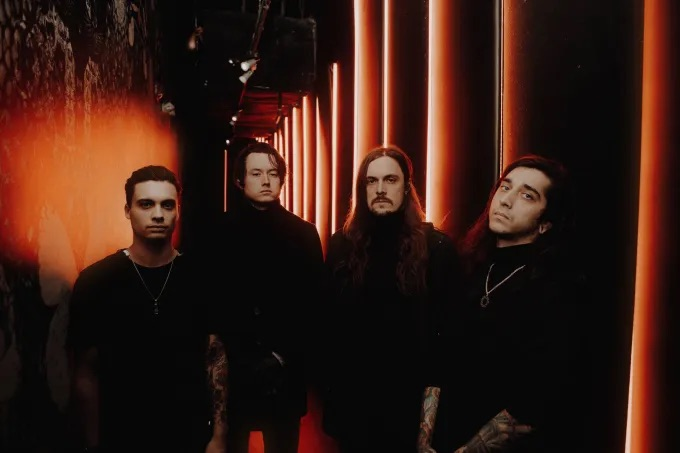
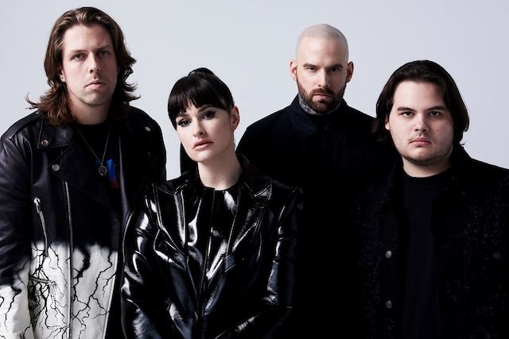
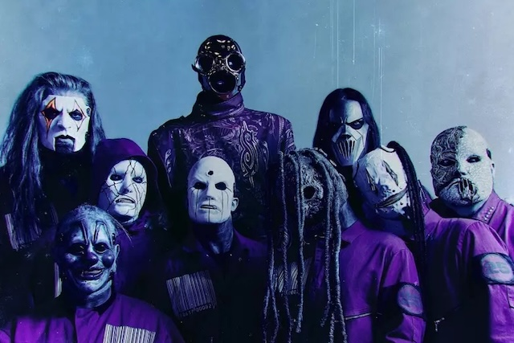

SLEEP TOKEN
ABOUT
Sleep Token is an anonymous band from the UK, fronted by the masked vocalist Vessel and backed by other anonymous members. They began making music around 2016 and gained serious traction with their blending of progressive metal, post-metal, djent, atmospheric music, ambient interludes, and emotional/clean vocals mixed with harsher elements. Their work often has strong dynamics, mood shifts, spiritual or ritual-like staging in live shows.
DISCOGRAPHY
Earlier this year, Sleep Token welcomed their newest album, "Even in Arcadia". With this album in mind, Sleep Token has released 4 full-length studio albums, 2 EPs, 1 instrumental album, and 20 singles. Some of their breakout hits, and the ones most often included in live show setlits, include “The Summoning”, “Alkaline”, “Dark Signs”, "Granite", and “Take Me Back to Eden”.
TOUR ALERT
With the release of their newest album, Sleep Token has embarked on the appropriately-named Even in Arcadia Tour, which is currently set to be a U.S.-based tour in support of their newest album. I was so excited for this tour, but was unfortunately unable to secure tickets - hopefully next time! To learn more about tour dates, stops, and how to purchase tickets, make sure to visit the official Sleep Token website for details.
BAD OMENS
ABOUT
Bad Omens is an American metal/metalcore band, fronted by vocalist Noah Sebastian. They formed around 2015 and have steadily built a reputation in heavier alternative/metalcore circles and more mainstream crossovers. Their sound features heavy guitars, strong atmospheres, occasional electronic or ambient touches, powerful choruses, and a balance between harsh and clean vocals.
DISCOGRAPHY
Currently, Bad Omens has released 6 full-length studio albums, 15 singles and EPs, and have released their newest group of singles, "Impose" and "Specter" in September 2025.
TOUR ALERT
Bad Omens is currently on tour! Their current tour, DO YOU FEEL LOVE EUROPE 2025, includes multiple dates in Europe (UK, Germany, Ireland, etc). Bad Omens also has live performances scheduled in Europe-based music festivals for June of 2026. To learn more about tour dates, stops, and how to purchase tickets, make sure to visit the official Bad Omens website for details.
SPIRITBOX
ABOUT
Spiritbox, formed in 2017/2018, is a Canadian heavy/progressive metal band, led by Courtney LaPlante (vocals) and Mike Stringer (guitar). Their style combines metalcore, progressive metal, post-metal and atmospheric elements, often with textural dynamics, clean and harsh vocals, melodic passages, and heavy breakdowns.
DISCOGRAPHY
Currently, Spiritbox has 2 full-length studio albums, 3 EPs, 1 compilation album, 23 singles, and 3 feature singles alongside artists like BABYMETAL, Megan Thee Stallion, and ILLENIUM. Some of their best known tracks are “Holy Roller”, “Rule of Nines”, “Constance”, and “Circle With Me”. These are generally fan favorites and staples in their live show setlists.
TOUR ALERT
Following the release of their sophomore album, Tsunami Sea, Spiritbox is getting ready to embark on a U.S. tour this fall. To learn more about tour dates, stops, and how to purchase tickets, make sure to visit the official Spiritbox website for details.
SLIPKNOT
ABOUT
Slipknot is an American heavy metal band from Des Moines, Iowa, active since 1995. Known for their masked members, aggressive sound, complex percussion, and chaotic/theatrical live shows, they have been among the most influential bands in nu-metal/alternative/heavy metal musical spheres. Over the years, membership has shifted, but key long-term figures include Corey Taylor, Shawn Crahan, Jim Root, Mick Thomson, and more. Their music is intense and raw, combining harsh vocals, aggressive riffs, and grooves, and often has dark or introspective lyrical themes.
DISCOGRAPHY
With 25 years under its belt, Slipknot has an extensive discography. Currently, they have 7 full-length studio albums, 3 live albums, 1 compilation albums, 5 video albums, 34 music videos, 1 EP, 27 singles, and 10 demos. Some of their most iconic tracks are “Wait and Bleed”, “Duality”, “Psychosocial”, “Before I Forget”, “People = Shit”, “Spit it Out”, and “The Heretic Anthem”. These songs are almost always staples in their live shows and fan favorites for capturing their energy and style.
TOUR ALERT
While not currently on tour, Slipknot has been active in various music festivals through mid-2025, and recently reissued their debut self-titled album in a 25th Anniversary Deluxe/Box Set edition.